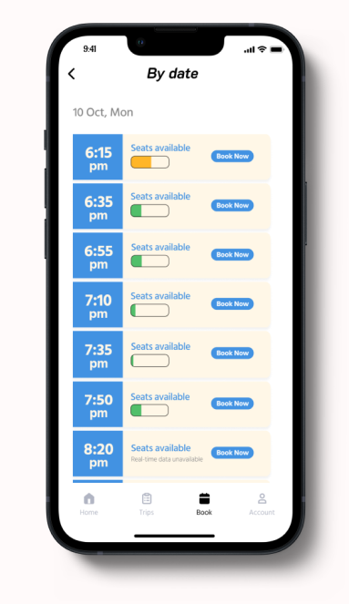

Next Project

Noah
Helping physically inconvenient people have a more meaningful commuting experience.
Why design this?
E-trip app is the best commuting app for physically inconvenient people, which allows prpeople to easily book seats on puplic transportation such as bus, tram so that their physical needs can be fulfilled. By providing useful functions, physically inconvenient can experience a new good commuting experience. We seek a new concept commuting app to provide a more meaningful commuting experience for this target group.
To solve this myself, l started brainstorming the elements of a successful commuting experience for this group. What are the main problems they encounter during their commute? How can I help? How can I solve these problems in a good way? What other needs, interests, and questions might arise while commuting?
Data was sampled from 15 people
Affinity Diagram
Logo Design
This is the login page.
We used two ways to log-in, password and code.
We also allow users to connect via Apple, Google andFacebook account login.
Upload relevant documents, automatic review and use our app after review.
Our homepage design is simple, convenient and the easiest for physically inconvenient people
All features on the Trip page.
Favourite / History / Barrier-free and Special Services.
We also allow users to select by date to quickly select their stations.
A simple QR code page allows users to quickly scan it.
We allow users to find booked information on the Account page.
The test goals included the following:
• ldentify any critical errors or incomplete task flows within the app
• Evaluate if the user comes across challenges with navigation or design
• Understand successful task flows and identify helpful Ul features
• Assess to see that relevant information is in the right place at the right time
Summary of Feedback
"lt's all right there, you shouldn't have any issues." - Participant on browsing Booking pages
"l like the Trip page it summarizes all functions and gives you a great description and care details with icons!" - Participant on Booking pages
"l think the map should also add the homepage and needed more info." - Participant on Barrier- free
Each stated that this application would meet their individual needs and was successful in reaching their end goal.There were many valid and interesting suggestions:
• Add more information on the map page.
• Some particpants not prompted to allow the application to access the mobile camera, so we should add a prompt asking to use the Allowed Apps
• Favoriting on the Barrier-free' feature
• Extra details about booking information, like, seats capacity
• Add some useful buttons for research page.
The left Barrier-free' page shows insufficient detail of the lead-in function in Barrier-free'
We updated (see right side figure) Barrier free' has added many details to help users find their way around better. For example, add the punctuation of elevator and voice navigation mode.
We redesigned the app's home page. The homepage design on the left was confusing to users so we removed the "set a commute" feature that should have been placed in the Trip page.
On the right is our new home page design.
Reflection for this case study: Reflection
My role: User lnterview / User Analysis / Interaction / Prototyping & Testing
Team: Ziqian Zhang / Ziyang Huang / Ziyu Ma / Jiapeng Cheng / Wenwen Zhao